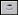
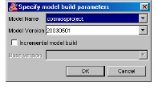
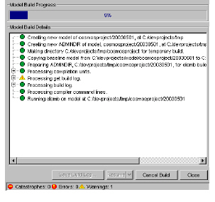
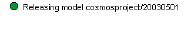

To start an incremental model build in the graphical user interface
1 Do one of the following:
• Select Model > Build Model.
• Click .
The Specify model build parameters dialog box appears.

2 From the Model Name list, select an information model.
3 In the Model Version field, type the new model version name.
4 Enable Incremental model build.
5 From the Base Version list, select the model version you want to use as a baseline.
6 Click OK.
A status panel appears.

For information on the types of messages that appear in the Model Build Details, see Model Build Information.
7 To cancel building the model, click Cancel Build.
To resume building the model, see Resuming a Model Build.
If the model builds successfully, a line similar to the following appears:

After the model build process is complete, we recommend that you examine your log files to verify model completeness and correctness, and to analyze and correct any errors.
8 To save the build log, click Save Build Log.
A standard save dialog box appears.
9 Select the file type you want to save the build log as (XML or TXT file).
10 Choose a directory and name for the build log.
11 Click Save.
12 To close the model build log and remove the model from the Builds in progress list in the Navigator panel, click Close.